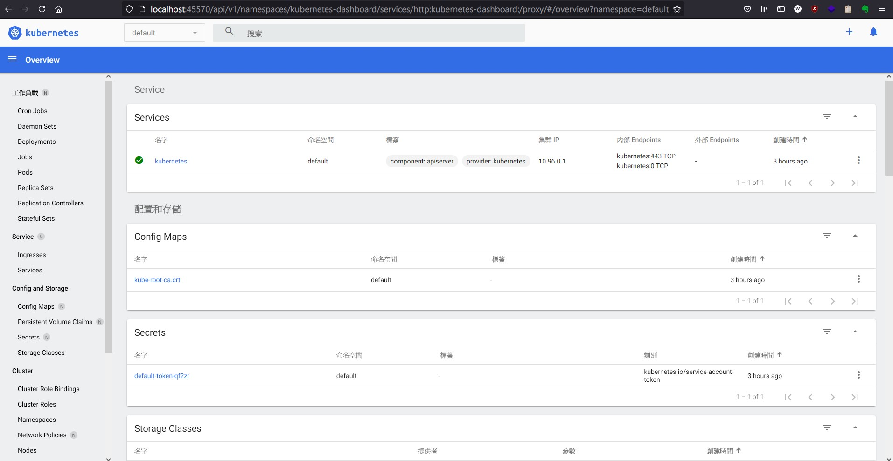

minikube 能夠快速在本地 (local) 建立 kubernetes cluster (k8s 叢集)，支援 macOS, Linux, Windows
非常適合新手探索 kubernetes
安裝需求 pre-requirement
minikube-Driver
▲ 官方有列出各類型 OS 建議搭建在何種虛擬環境上。本篇筆記選用 CentOS 7.9.2009 + Docker
最小硬體需求
- 雙核心 2 (CPUs or more)\
- 記憶體 2 GB (2 GB of free memory)\
- 硬碟空間 20 GB (20GB of free disk space)\
- 連上外部網路 (Internet connection)
安裝
minikube start
下載 + 安裝 rpm
1
2
|
curl -LO https://storage.googleapis.com/minikube/releases/latest/minikube-latest.x86_64.rpm
sudo rpm -Uvh minikube-latest.x86_64.rpm
|
啟動 minikube
這個時候可以看到因為沒有安裝任何 minikube 支援的虛擬化環境。
1
2
3
4
5
6
7
8
9
|
* minikube v1.21.0 on Centos 7.9.2009
* Unable to pick a default driver. Here is what was considered, in preference order:
- docker: Not installed: exec: "docker": executable file not found in $PATH
- kvm2: Not installed: exec: "virsh": executable file not found in $PATH
- podman: Not installed: exec: "podman": executable file not found in $PATH
- vmware: Not installed: exec: "docker-machine-driver-vmware": executable file not found in $PATH
- virtualbox: Not installed: unable to find VBoxManage in $PATH
X Exiting due to DRV_NOT_DETECTED: No possible driver was detected. Try specifying --driver, or see https://minikube.sigs.k8s.io/docs/start/
|
安裝 Docker
參考文章: Install Docker Engine on CentOS
新增 docker repo
1
2
|
yum install -y yum-utils
yum-config-manager --add-repo https://download.docker.com/linux/centos/docker-ce.repo
|
安裝 docker-ce
1
|
yum install docker-ce docker-ce-cli containerd.io -y
|
enable/start docker
1
|
systemctl enable --now docker.service
|
再次啟動 minikube
1
2
3
4
5
6
7
|
* minikube v1.21.0 on Centos 7.9.2009
* Automatically selected the docker driver. Other choices: none, ssh
* The "docker" driver should not be used with root privileges.
* If you are running minikube within a VM, consider using --driver=none:
* https://minikube.sigs.k8s.io/docs/reference/drivers/none/
X Exiting due to DRV_AS_ROOT: The "docker" driver should not be used with root privileges.
|
嗯… 其實以 root 身分運行 container 是有安全風險的，因為 container 隔離性 (isolated) 不像 VM 一樣這麼好!
每一個 running container 其實都是一支 daemond 因此有「跑出隔離區」影響到 Host OS 的風險~
綜合上述 minikube 不允許使用 root 身分執行
The “docker” driver should not be used with root privileges. #7903
Manage Docker as a non-root user
建立 minikube user
1
2
3
4
5
6
7
8
9
10
|
useradd minikube
usermod -aG docker minikube
## check
id minikube
uid=1000(minikube) gid=1000(minikube) groups=1000(minikube),994(docker)
## (optional) change minikube user password
passwd minikube
|
以 minikube 使用者再次執行 minikube
阿是要弄幾次啦
1
2
|
su - minikube
minikube start
|
以 minikube v1.20.7 來說總共會下載 359 MB (gcr.io/k8s-minikube/kicbase) + 492 MB (preloaded-images-k8s-v11-v1) = 860 MB 左右的 docker image
查看 container 運作狀態
1
2
3
4
|
docker ps
CONTAINER ID IMAGE COMMAND CREATED STATUS PORTS NAMES
8df8d54743f8 gcr.io/k8s-minikube/kicbase:v0.0.23 "/usr/local/bin/entr…" 20 minutes ago Up 20 minutes 127.0.0.1:49157->22/tcp, 127.0.0.1:49156->2376/tcp, 127.0.0.1:49155->5000/tcp, 127.0.0.1:49154->8443/tcp, 127.0.0.1:49153->32443/tcp minikube
|
可以發現 minikube 容器使用了 22/TCP 2376/tcp 5000/tcp 8443/tcp 32443/tcp，而且使用隨機映射 (-P)。
透過 minikube 安裝 kubectl
kubectl 是一支能夠管理 kubernetes cluster 的 CLI (命令列) 工具。 minikube 能替我們安裝適合當前 k8s cluster 對應版本。
1
|
minikube kubectl -- get po -A
|
Run the Kubernetes client, download it if necessary. Remember – after kubectl!
This will run the Kubernetes client (kubectl) with the same version as the cluster
安裝指令自動補齊 (auto-completion)
minikube-completion
1
|
source <(minikube completion bash)
|
Kubernetes Dashboard
執行命令可以開啟 minikube 建立的 kubernetes cluster
1
2
3
4
5
6
7
|
minikube dashboard
* Verifying dashboard health ...
* Launching proxy ...
* Verifying proxy health ...
* Opening http://127.0.0.1:45570/api/v1/namespaces/kubernetes-dashboard/services/http:kubernetes-dashboard:/proxy/ in your default browser...
http://127.0.0.1:45570/api/v1/namespaces/kubernetes-dashboard/services/http:kubernetes-dashboard:/proxy/
|
如果有安裝圖形介面環境，會自動打開預設瀏覽器~ 但我的 Eric_minikube VM 沒有安裝 XWindows 加上是建立在 207，不算真正的 localhost。(白話文: 辦公室電腦預設情況下碰不到)。
怎麼辦呢 ? 只好現學現賣 SSH Tunneling (Port Forwarding) 詳解
我在 office PC 使用 WSL (Windows 內的 Linux 子系統) 打了一個隧道通往 Eric_minikube 上面的 127.0.0.1:45570
如此一來就能達成在 office pc 透過瀏覽器打開 k8s dashboard
1
|
sudo ssh -4NfL 45570:127.0.0.1:45570 root@192.168.207.151
|
